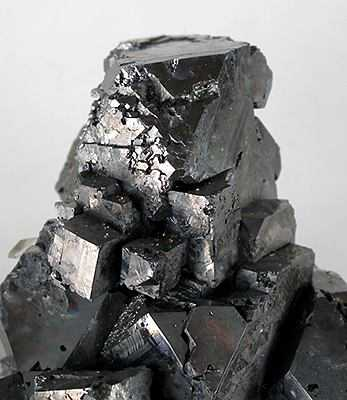

Símbolo: Pb
Número atómico: 82
Masa atómica: 207,2 u
Grupo: 14
Período: 6
Estado físico: Sólido
Familia: Metales post-transición.
Metal de color gris azulado. Es muy denso y pesado. Es blando y fácil de moldear. Tiene un punto de fusión relativamente bajo. Es tóxico para los seres humanos.
Se encuentra principalmente en un mineral llamado galena (PbS),
que es una de sus principales fuentes naturales.
Se utiliza principalmente en baterías de automóviles y en materiales de protección contra la radiación, como los utilizados en instalaciones médicas. Antiguamente también se utilizaba en cañerías y pinturas, pero muchos de esos usos se restringieron debido a su toxicidad. Importante: El plomo no cumple una función biológica necesaria en el cuerpo humano. La exposición puede afectar el sistema nervioso y otros órganos.